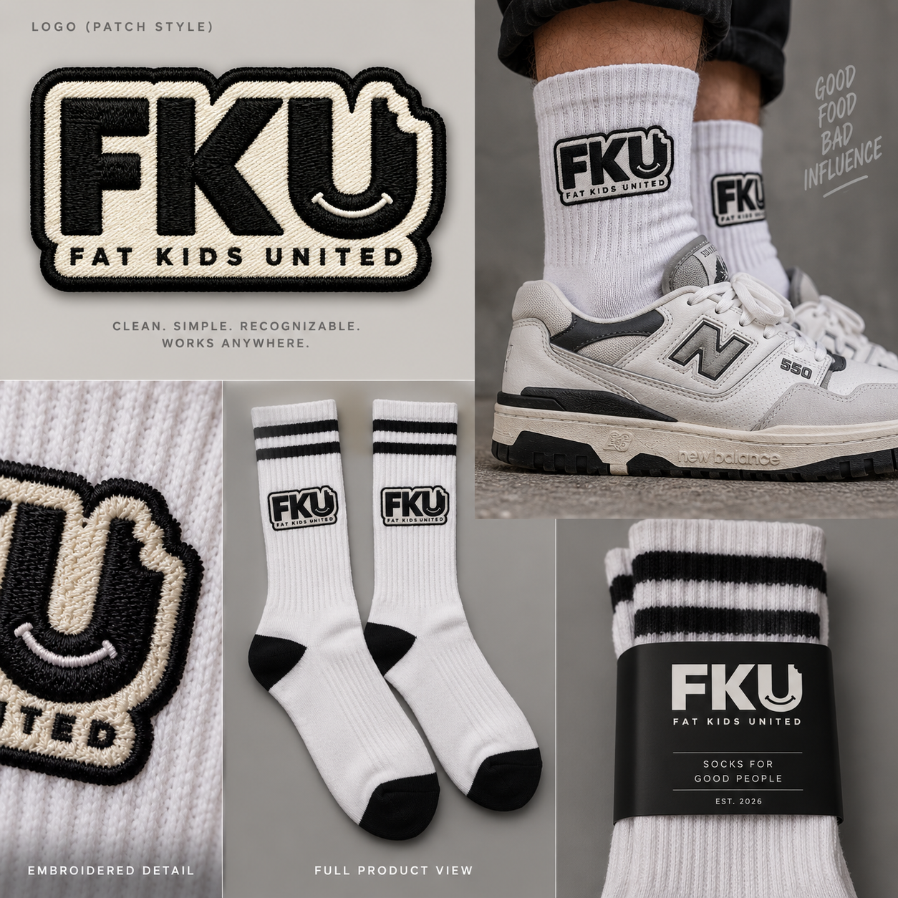
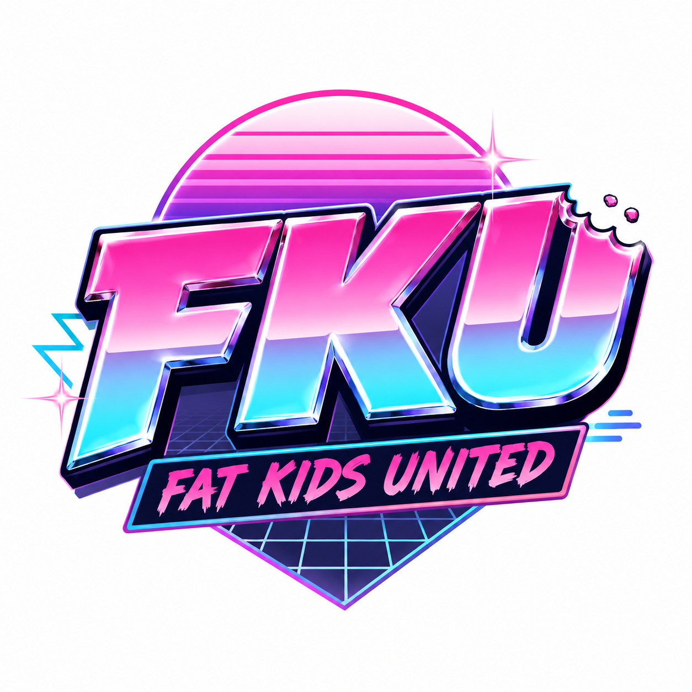
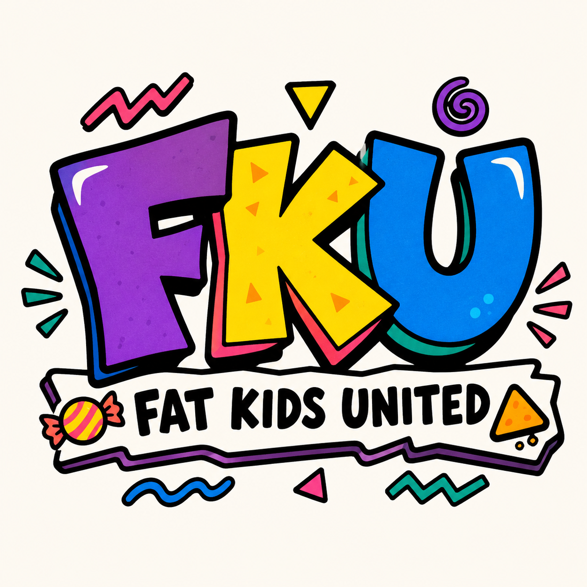

THE MAIN SHOW
FKU
AFTER HOURS
Late-night streams: games, freestyles, food, arguments, guests, internet chaos.
A VERY SERIOUS CULTURAL INSTITUTION*
FKU is a creator collective and late-night clubhouse for music, games, anime, food, friends, and whatever else is worth getting too invested in.
*Not legally an institution. Probably.People don't care about a random logo. They care about the place the logo takes them back to.
FKU is that place: Wayne on a beat, somebody losing their mind over a boss fight, a 1:00 AM food run, an anime argument that goes way too far, and a community that was there for it.
THE NETWORK
Everything lives under FKU. Each vertical gets its own personality without turning the master brand into a mess.
THE MAIN SHOW
Late-night streams: games, freestyles, food, arguments, guests, internet chaos.
MUSIC / BEATS
Freestyles, original beats, short releases, guests, and the soundtrack to the whole thing.
GAMES / ANIME
Streams, challenges, tier lists, character debates, boss fights, and deeply unnecessary opinions.
FOOD / CULTURE
Late-night eats, snack reviews, cooking experiments, local spots, and eventually real chef gear.
CONTENT ENGINE
The brand grows through entertaining content first. Merch becomes the artifact people take home from it.
FKU GOODS
Every drop should connect to something people watched, heard, argued about, or were there for.

The permanent uniform. Black, white, simple, recognizable.

A vaporwave capsule tied to the late-night show.

Original 90s-cartoon energy for anime, games, cereal, and bad decisions.
JOIN FAT KIDS UNITED
Drop alerts, stream announcements, new tracks, voting on stupid arguments, and first access to whatever FKU turns into next.
Prototype form — nothing gets sent anywhere.
THE POINT
“THE MERCH ISN'T THE BRAND.
THE PEOPLE, CONTENT, AND CULTURE ARE.”
Build something worth belonging to. Then the logo means something.
BACK TO TOP ↑